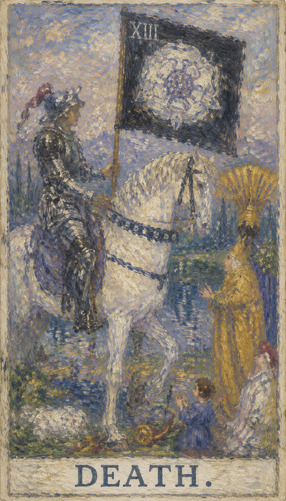

— 貳 · CORRESPONDENCES
对应要素Esoteric Correspondences
- 元素 Element
- 水水 · 情感、直觉与深层潜意识
- 星座 Zodiac
- 天蝎座Scorpio · 毁灭、重生与深层蜕变的阵痛
- 生命之树 Tree of Life
- Nun第24条路径 · 联结美丽 (Tiphareth) 与胜利 (Netzach)
- 希伯来字母
- Nun第十四个字母 נ · "鱼"，在幽暗深水中孕育新生命


死神骑着白马穿过旧世界，带来无法回头的转化。它清理枯萎之物，为新的生命腾出位置。 当这张牌出现，说明你正遇到“结束、转化、蜕变、新生”的课题。它既可能表现为外部事件，也可能是内心正在成熟的一个阶段。牌面上，死神头戴红色羽毛之帽，手持一面绘有蔷薇十字会图腾的黑色旗帜，骑在一匹白色战马上，高高俯视地上的生灵——这图腾被解读为死后获得新生的过程，或对应火星、象征不朽的生命力。
← 返回大厅 / 选择其它卡牌骷髅骑士骑白马前行，黑旗上有白玫瑰，远处太阳升起。死神的马蹄下有四个人物：国王、圣职者、妇女与儿童，象征人们对死亡的四种态度——国王代表抗拒，终被马蹄无情踩踏；圣职者将令牌置于地上，崇敬并祈求被主引入天堂；妇女跪地，因恐惧而昏厥；天真的孩子因无知而满脸好奇。无论抗拒、崇敬、恐惧还是无知，都揭示同一个真理：无论贫富、男女老少，死亡都是不可抗拒的自然现象，无法逃避，也无需逃避。远方河流是伊甸园四河之一，河中有船；死神脚边的箭头指向一个洞穴，可能是《神曲》中通往阴间的通道。牌的右方一条小径通向两座高塔之间、朝向象征永生的朝阳，寓意死亡并非生命的终点；白马象征纯洁，意味着把过去全部抛弃、从头开始。
通常人们提到“死亡”只联想到肉体的消逝，但在塔罗中，那类灾难性事件更多由塔牌来代表；死神牌所指的，更多是其他形式的“终结”——离开一家公司、完成一篇论文，甚至一次皮肤的新陈代谢，都是终结。从合同到期、婚姻终止，到睡觉、起床，我们无时无刻不在与终结共存，因此抽到死神并非什么大不了的事。真正的课题是“如何面对改变”：人对改变的恐惧，造就了对熟悉模式终结的惊恐。在死神正位时，当事人通常有能力面对即将到来的改变，占卜师只需提醒他做好准备；而由于死神是大牌，这种改变是无法抗拒的。
死神表示面对绝境时所采取的不同态度。正位表示人事物的终结——到此为止；逆位表示人事物的终结之后，从头再来。
骷髅骑士骑白马前行，黑旗上有白玫瑰，远处太阳升起。

骷髅骑士骑白马前行，黑旗上有白玫瑰，远处太阳升起。
表现当事人面对课题时的心理位置。
提示事件发生的精神气候与现实压力。
象征这张牌运作能量的工具或门槛。
显示意识清晰度、希望或阴影。
对应此阶段在人生旅程中的功课。
常代表死亡、重生与未知的变化。
黑色与神秘、离别相关，旗上的白玫瑰象征纯洁与精神性。
象征不可避免的改变，无情地对待所有人。
象征纯洁、力量与胜利。
暗淡的天空象征不确定与转变的时期。
象征感情的流动，以及生命的继续与变迁。
日落常代表一个周期的结束与另一个周期的开始。
面对死亡仍保持敬仰，代表对生命循环的接受或理解。
儿童象征无辜与纯真，表示新的开始与未来的可能性。
提醒我们死亡是均等的，对每个人都公平。
盾上的花朵代表美与生命，象征死亡与生命之间的自然循环。
河中的桨手预示死后的旅程，或变化过程的引导者。
象征希望、信仰，以及某种形式的安慰或救赎。
象征社会的不同面向，以及个人如何面对终结与改变。
数字 13 代表此牌所在的灵魂阶段。它指向经验累积后的转折与整合，引导人从事件表层进入更深的精神功课。
在解读时，死神提醒我们：事件表面的顺逆终会变化，真正值得把握的是牌面所揭示的内在功课。

**关键词**：结束，转化，告别，蜕变，新阶段，断舍离，重生，失败，恶运连连，走进死胡同，绝望，无疾而终，努力成为泡影，结局，终结，改变，变化，变革，替代，过渡，新陈代谢，解脱
正位的死神表示这股能量正在逐渐清晰。它代表结束与新的开始、痛苦的转变与深度改变，是生与死的轮回、是重生——放下过去、接受现实、破旧立新、面对恐惧、欢迎改变。顺着牌面主题行动，事情会显露可被把握的方向。
结束，转化，告别，蜕变，新阶段，断舍离，重生，失败，恶运连连，走进死胡同，绝望，无疾而终，努力成为泡影，结局，终结，改变，变化，变革，替代，过渡，新陈代谢，解脱
水 元素 · 开启、滋养与自我调和
健康生活上，死神提示身心状态与当前心理课题相连。适合检查压力来源、作息习惯和身体信号，并以更稳定的方式照顾自己。死神鼓励一种“断舍离”式的更新——告别有损健康的旧习惯、旧模式，让身体如新陈代谢般完成一次彻底的更替，为新的生命状态腾出空间。
可能代表对周边事物毫无爱好、厌世、遭遇窘境，或一切化为泡影、哑巴吃黄连有苦说不出。若问具体事件，正位多表示事情进入关键阶段。主动理解它的意义，会比单纯等待结果更有力量。

**关键词**：抗拒变化，拖延结束，停滞，执念，无法放下，改变计划，变更形象，东山再起，走出低谷，脱胎换骨，勇于开拓，拒绝改变，反对变革，不想结束，强行续命，内心净化，念头通达，境界提升，恐惧，逃避
逆位的死神具有两面性：一面是抵抗改变、害怕结束、逃避现实、留恋过去而无法放下，导致生活停滞、对未知充满恐惧；另一面则是触底反弹后的转机——脱胎换骨、走出低谷、东山再起、内心净化与境界提升。此时最重要的是先看清自己是否正在抗拒这张牌所要求的功课。
抗拒变化，拖延结束，停滞，执念，无法放下，改变计划，变更形象，东山再起，走出低谷，脱胎换骨，勇于开拓，拒绝改变，反对变革，不想结束，强行续命，内心净化，念头通达，境界提升，恐惧，逃避
水 元素 · 延迟、失控与过度自我沉溺
健康上，逆位常提示压力累积、情绪压抑、作息失衡或身体警讯被忽略。当人执着于旧状态、抗拒必要的改变，停滞便会转化为身心的负担；但逆位也蕴含“内心净化、念头通达”的转机。建议减少极端做法，借这次低谷完成一次内在的整理，重新建立可持续的生活节奏。
可能代表心情转好、勇于开拓。事情可能延迟、反复或暴露隐藏问题。先修正模式，再谈结果。

当死神出现在三牌阵中，它象征的是能量在时间维度上的显现。点击下方卡牌揭示隐秘启示。
过去可能有重大的结束或转变，这些变化为你当前的情况铺垫了基础。
你可能处于变化的中心，一些事物正在结束，让你感到不安却也充满期待。
未来将带来更多变化与转变，闭合一些章节，开始新的篇章。